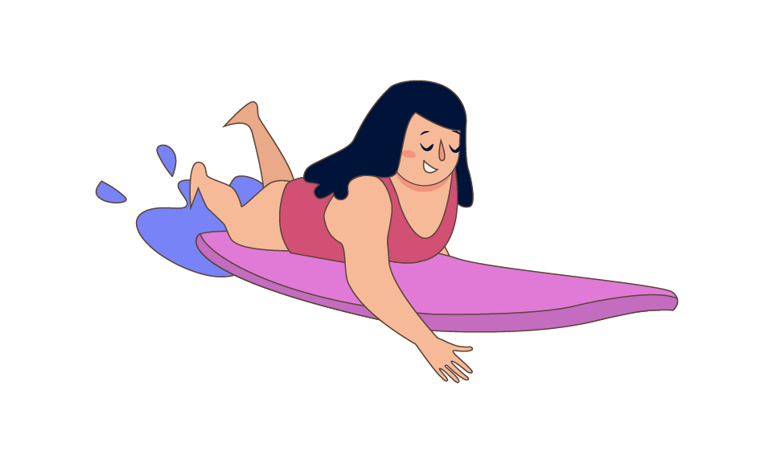
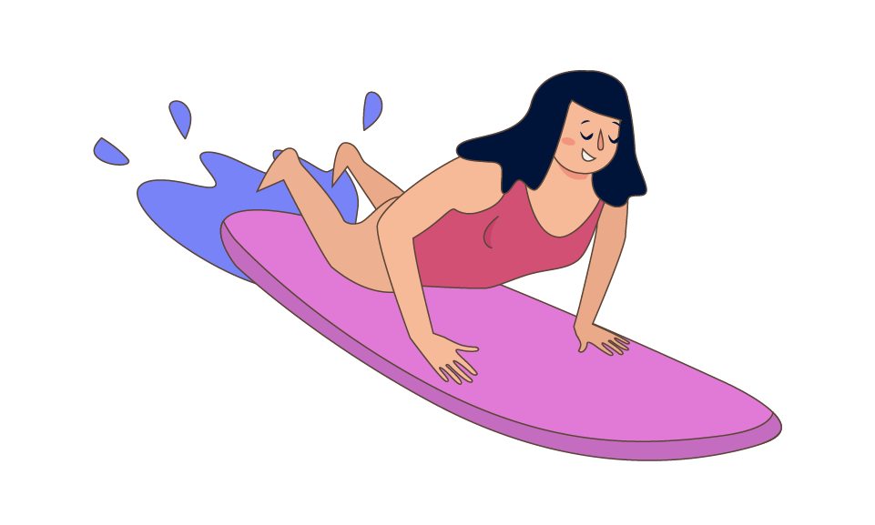
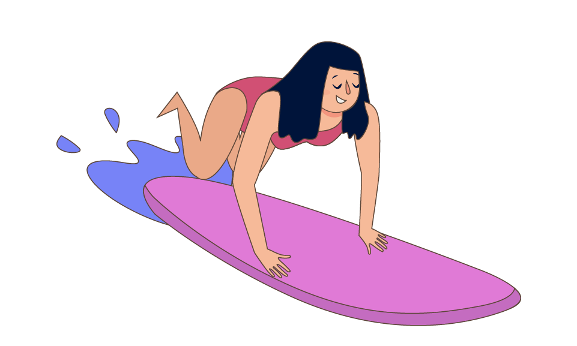
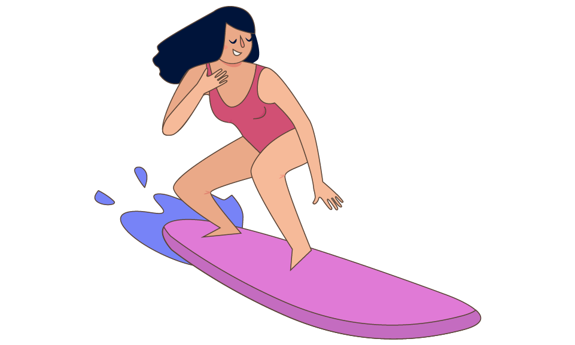

← Retour

Le takeoff
Le takeoff est souvent une des premières compétences que l'on doit acquérir pour commencer à surfer.
Première étape
- Il faut ramer suffisamment pour rattraper la vitesse de la vague.
Deuxième étape
- On peut ensuite placer les mains bien à plat sous la poitrine (et non attraper le rebord de la planche).
- Pour réussir à se lever sur la planche lorsque la vague commence à nous pousser, il faut être bien positionné, ni trop à l'avant, ni trop à l'arrière de la planche.
Troisième étape
- On va ensuite commencer à soulever le haut du corps en préparation pour le saut ou le placement de la jambe arrière.
Quatrième étape
- Si on en est capable au va sauter d'un coup avec le pied arrière près de l'arrière de la planche et le pied avant à peu près au milieu de la planche.
- Une autre technique consiste à se contorsionner un peu pour placer son pied arrière à sa position d'arrivée et s'en servir pour venir placer son pied avant au centre (dessin en préparation).
Cinquième étape
- Vos jambes doivent être un peu plus écartées que la largeur de vos épaules.
- En fonction de la taille de la planche le positionnement varira un peu. L'idée est de trouver une zone avec la bonne quantité d'appuie à l'avant et arrière pour garder la planche stable.
- Et bien sûr, par rapport à la largeur de la planche, les pieds doivent être au centre.
Autre
- Si vous sautez spontanément avec le pied droit à l'arrière vous être regular, avec le pied gauche, goofy.
Quelques liens
Tuto takeoff de l'ucpa
Tuto de Stephanie Gilmore